Widget icon tutorial
24th April 2012: Please note
Starting with Opera 12, Opera Widgets will be turned off for new users and completely removed in a later release. If you're interested in building addons for Opera, we recommend going with our extensions platform — check out our extensions documentation to get started.
Table of contents:
- Introduction
- Quick guide for pros
- Making your own icons
- Creating different-sized variants
- Including the icons in your widget
- Summary
Introduction
Different platforms use different sizes for widget icons, ranging from 16×16 to 128×128 – see Figure 1 for some examples. You should supply icons for these different sizes to ensure the look and feel of your widget maintains a high quality on several platforms.
In this tutorial I’ll show you how to make effective Widget icons at different sizes. I’ve prepared some Photoshop templates you can use as a basis for your own custom icons; you can use these to follow along with the tutorial sections below.
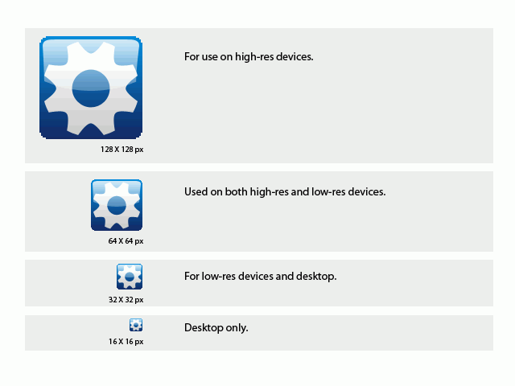
Figure 1: The default widget icon sizes and their uses
Note that the tutorial sections below make use of Photoshop CS2. If you have a different graphics package, you’ll need to use equivalent settings in that software.
Quick guide for pros
This section provides some quick tips for experienced graphics designers who just need some conventions to follow when making widget icons, but are already very experienced in design techniques and graphics software. If this describes you, then you should have all you need after reading this section, and shouldn’t need to dive into the tutorials below.
In summary:
- You should Prepare icon graphics (the motif) for all icon sizes with a transparent background.
- Excluding the space needed for the background, the widget icons motifs should typically be 12–14, 25–29, 50–58 and 100–116 pixels big.
- Open the template files and paste the icon graphic layer above the placeholder widget cog layer, and hide or delete this.
- Adjust the colors in the gradients of the background layer (and border layer) and transparency of the gloss layer; keep everything else as is.
- Don’t scale the templates, as the rounded corners need to be pixelated to support all screens. Don’t use any alpha blending, in other words. Don’t alter the roundness of the corners.
- Save for web as PNG-8, 256 colors, selective, pattern, transparent.
Making your own icons
The steps below will take you gently through the process of creating custom widget icons, using my templates as a starting point.
-
First of all go ahead and open the template file. Save the PSD file under a new name so you don’t overwrite the template file.
When working with a pixel/bitmap image format, start off with the largest icon template, 128_widget_icon_template.psd, so that it will scale downwards to other sizes nicely (it would look pixelated if you started to scale upwards). When working with vector icons, it might be advisable to start with a smaller icon template, as the vector image then will look sharp in all sizes. If it is nice and readable in 16×16, it will also be so in the bigger sizes, whereas the icon might become a bit blurry if you scale in the other direction. In any case, it’s advisable to tweak the smaller icons a bit to improve their readability if they become blurry.
-
Now you should choose a suitable icon motif for your widget icon – 116px is a good size for a no border 128×128px icon. In the example I’ll use a globe, as seen in Figure 2.
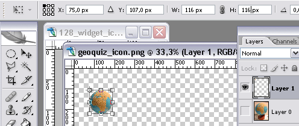
Figure 2: An example icon motifThere are two icon variants included in the template: with and without a frame. These are in their own group folders. Choose whichever one works better for you.
-
Alter your icon if needed. Keep it simple. Remove the background and scale it to fit the 128×128px template. With both the template file and the icon motif files open in Photoshop, drag your icon layer over to your template file while holding down the “Shift” key. This will center the icon in the template. Move the icon layer up or down if needed.
The pasted layer should be where the example widget logo image layer is located. Turn off the example layer, as seen in Figure 3.
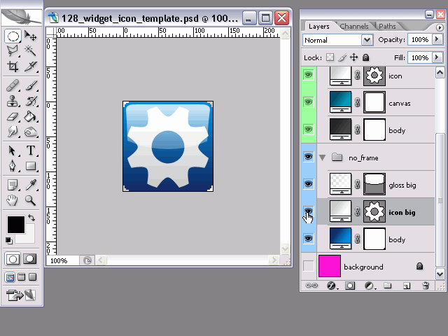
Figure 3: Turning the example layer off -
To change the gradient background, simply double-click the blue gradient in the “body” layer and select your desired colors. There is no need to fiddle around with anything but the colors here.
Double click the layer gradient to open it, as seen in Figure 4. Click on the color to edit the gradient colors. Try to keep them simple and don’t make the two colors too different. Don’t add more color stops to the gradient.
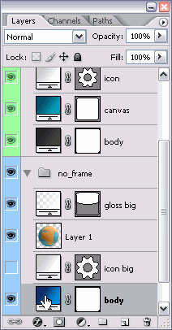 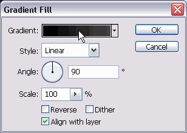 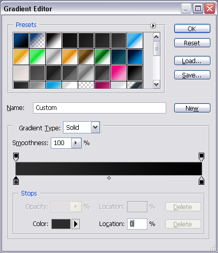
Figure 4: Editing the layer gradient -
The gloss might be too hard or soft for your image/background, so adjust the gradient of the “gloss” layer to suit, or simply adjust the opacity of this layer (see Figure 5). The top part of this gradient should always be less transparent (more white) as this is where the imaginary light will come from to make this effect believable.
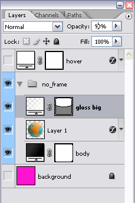
Figure 5: Adjusting the layer opacitySimply adjusting the layer opacity might be enough.
-
Usually a subtle drop shadow on the icon motif will do a lot to the result. Add a layer effect to the pasted image layer by double clicking it, and select “Drop Shadow” from the menu (see Figure 6). Usually an opacity of 50% and a distance of 2–3px with a spread of 5px will look good (leave everything else at the default values); keep the angle at 90%.
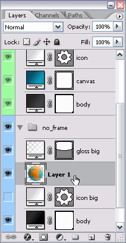 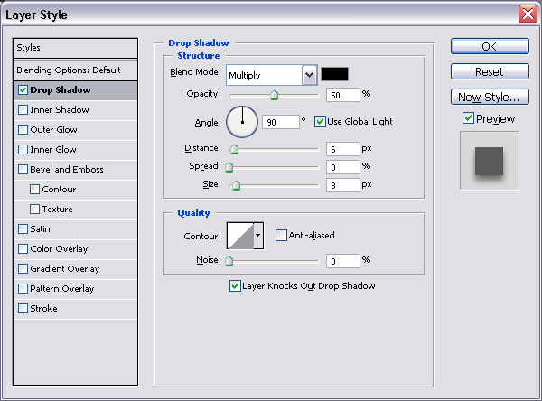
Figure 6: Adding a drop shadow effect -
The last step is to save your icon. Choose “Save for web” (Ctrl + Shift + Alt + S) and choose the settings “PNG-8”, “256 colors”, “Selective”, “Pattern” and “Transparency – no dither”. This will make sure your icon stays lean; the extra compression of PNG-8 makes the images much smaller.
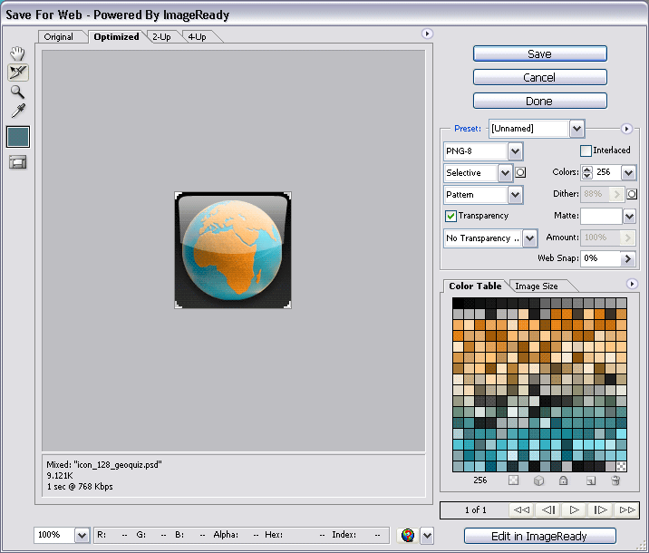
Figure 7: Saving the icon, with relevant settingsName it with the size of the icon and something recognisable, like 128_widget_icon_mywidget.png. If you want to keep the Photoshop original of your icon, save this now as well.
The final result as can be seen in Figure 8:
Figure 8: The completed icon.
This should about do it! Simple, huh? But this isn’t the full story. Now we need to make different-sized variants for different resolutions.
Creating different-sized variants
-
To support more icon sizes we need to first open the other template files. The next default icon size is 64×64 pixels; half the size of what you worked on so far. The 128px template can be scaled down to this size, but no further, because the rounded edges of the icon will get too blurred with further scaling down. In addition, some devices are not able to correctly render alpha transparency.
For the 64×64 icon select “Image Scale…” (quickest accessed by right clicking the title bar of the image), make sure all three checkboxes are selected, select “Bicubic” for the resampling method and set the new size to 64 pixels. Save this for web as a PNG-8 like before, remembering to change the name of the file to describe the new size!
Make sure you’re scaling the original PSD here, and not your compressed PNG!
-
For the next steps, it is easiest to save the gradients. Double-click the gradient you want to save, click on the little down arrow to the right of the gradient image in the dialog box, then click the little right arrow to the right of all the gradients and select “New Gradient…”. Give your gradient a name and click “OK”. You will now have quick access to this gradient, which is handy when you need to re-use it. See Figure 9 for the relevant dialog settings.
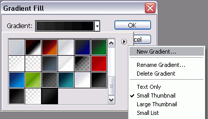
Figure 9: Saving your gradientsThe simplest way of making the smaller icon sizes is to scale down the one we just created (all checkboxes checked, remember) as seen in Figure 10. Then you’ll keep the icon motif and replace everything else.
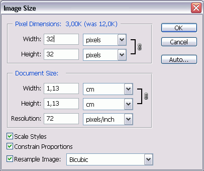
Figure 10: Scaling down the original. -
Now open the corresponding template file then drag the icon graphic layer from the original (while holding the “Shift” key to center the content) to the other template file, seen in Figure 11.
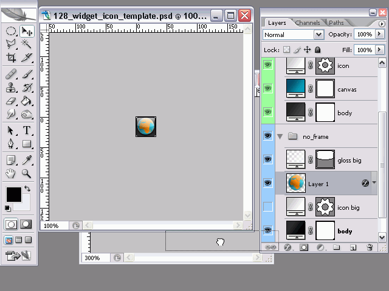
Figure 11: Dragging your icon motif from the original to the template -
Finally, double click the background gradients and select the newly created gradient from the palette, as seen in Figure 12.

Figure 12: Selecting the saved gradient
Including the icons in your widget
In order to use your icons, put them in your widget package icon folder, and add icon elements to the config.xml file of your widget like this:
<widget>
...
<icon>icons/128_widget_icon_mywidget.png</icon>
<icon>icons/64_widget_icon_mywidget.png</icon>
<icon>icons/32_widget_icon_mywidget.png</icon>
<icon>icons/16_widget_icon_mywidget.png</icon>
...
</widget>
When you upload your widget to widgets.opera.com, the icons will be recognized and used when using the widget on different devices.
Summary
And there you have it. Through this tutorial I’ve shown you how you can create widget icons for different resolutions based on ready-made Photoshop templates, and how to include the different-sized icons in your widget.
This article is licensed under a Creative Commons Attribution, Non Commercial - Share Alike 2.5 license.
Comments
The forum archive of this article is still available on My Opera.
No new comments accepted.